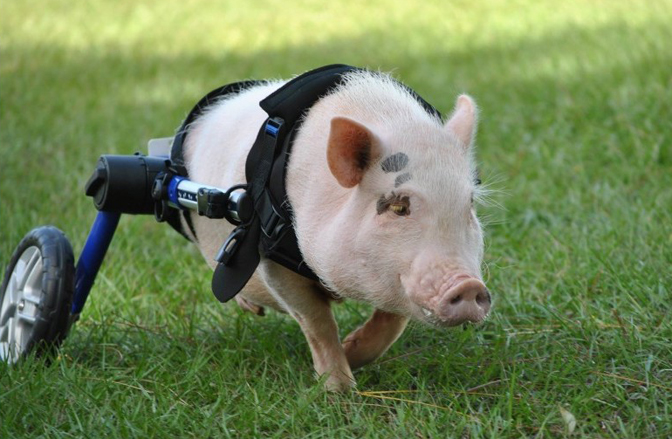

Chris P. Bacon trots across his territory, on his way to steal your girl.
A time line of Mr. Bacon's life:
2013
Jan 13 - Born in Florida, USA with a congenital defect affecting both hind linds causing them to be unusable
Jan 21 - Brought to the Eastside Animal Hospital to be euthanized, but is found to be a completely health piglet, except for his anomaly, and is adopted by Dr. Len Lucero
Jan 27 - Goes viral after a video of him using his new wheelchair, made of K'nex blocks and rope, is uploaded to the Internet
2014 - Featured in the published book "Ripley's Believe It or Not"
2015 - Featured in the published book "Eye-Popping Oddities"
2021 - Passed away due to a sinisterly ironic condition, lung smoke damage, after his barn enclosure caught on fire